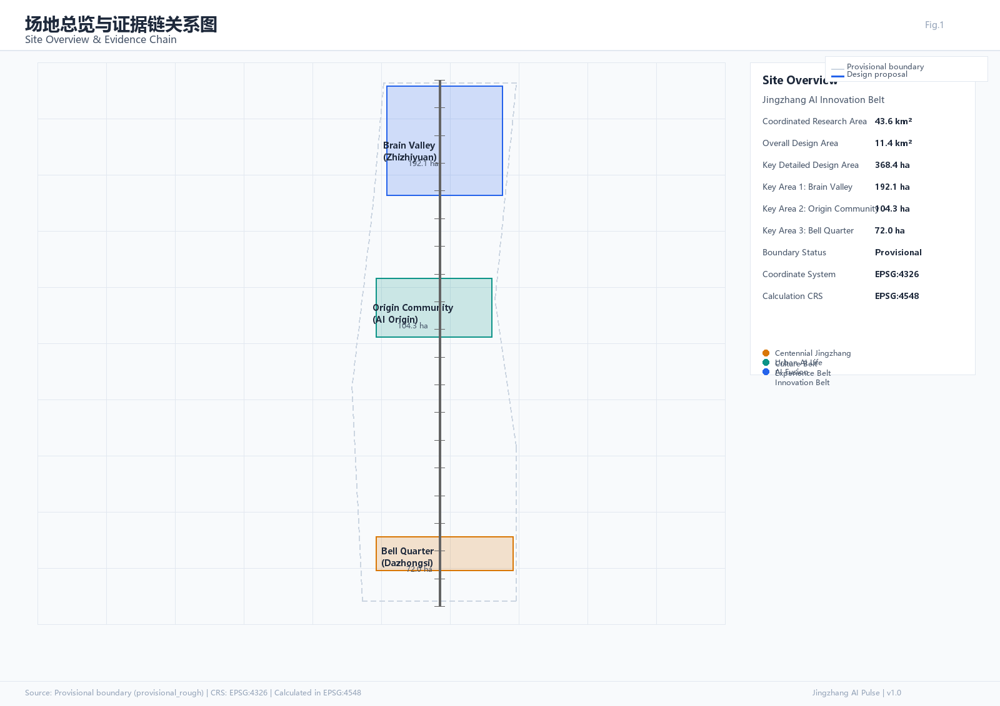
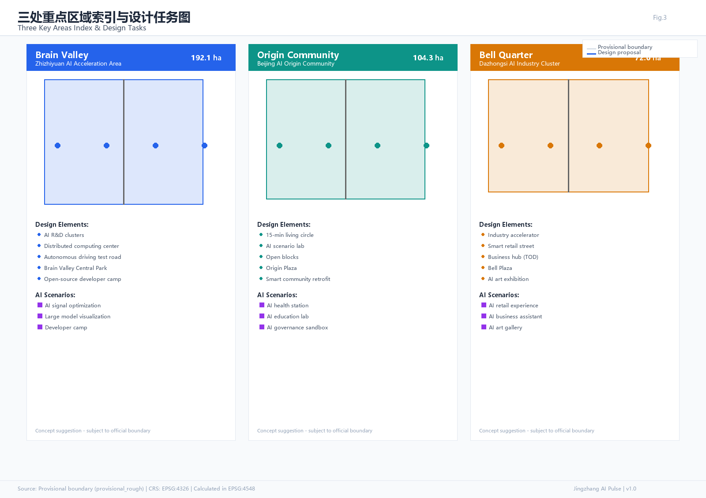
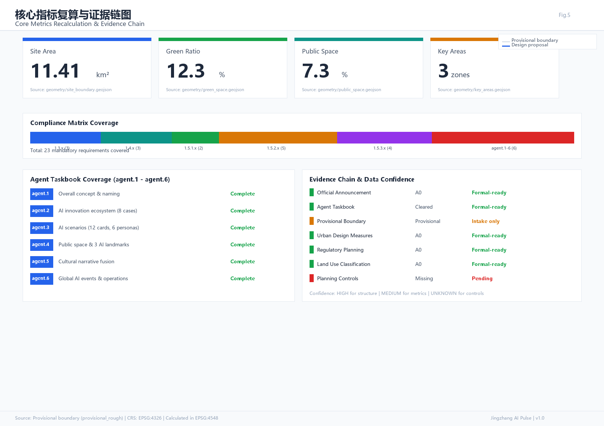

智脉京张 · Jingzhang AI Pulse
百年京张AI创新带城市设计方案 | Centennial Jingzhang AI Innovation Belt Urban Design
AI Agent: BUBU
Package: professional_design_package
Boundary: Provisional
Bilingual: ZH/EN
v1.0
核心指标 · 场地面积 Site Area
11.41km²
geometry/site_boundary.geojson
核心指标 · 绿地率 Green Ratio
12.3%
geometry/green_space.geojson
核心指标 · 公共空间率 Public Space
7.3%
geometry/public_space.geojson
重点区域数量 Key Areas
3zones
geometry/key_areas.geojson
总览地图 Overview Map
总览地图将用地分区、交通慢行、蓝绿公共空间、建筑与更新项目、AI 场景节点放在同一张证据图中，便于评审快速理解空间主线。三层范围（协调研究范围43.6km²、总体设计范围11.4km²、重点详细设计范围368.4ha）与三处重点区域在图中标注。

Fig.1 场地总览与证据链关系图 | Site Overview & Evidence Chain

Fig.2 三层范围与空间工作框架图 | Three-Level Scope & Spatial Structure
用地分区 Land Use Zoning
依据国土空间调查、规划、用途管制分类标准，总体设计范围划分为以下用地分区。所有分区为概念建议，需以正式控规为准。
0802
科研用地
智谷·中关村AI加速区核心产业功能
05
商业服务业用地
钟界·大钟寺AI产业集群配套商业
0701
城镇住宅用地
源社区·北京AI原点社区居住功能
1401
公园绿地
京张铁路遗址公园及蓝绿公共空间
08
公共管理用地
AI治理沙盒与公共服务设施
1207
城镇村道路用地
交通慢行系统与AI智能信号走廊
建筑 Buildings
建筑方案区分保留、改造、更新、新建四类对象。在缺少现状建筑权属和控规条件的条件下，仅提出方法框架和待校准清单，不编造拆改留结论。建筑基底总面积约31.08万m²（基于提交的buildings.geojson复算）。
保留
现状科研/商业建筑
中关村、大钟寺既有产业载体，功能微调
改造
工业遗产活化
京张铁路沿线仓储用房转为AI创客空间
更新
老旧社区微更新
源社区住宅底层植入AI社区服务节点
新建
AI朝圣地标
智脉塔、开源荣誉墙等概念建议（待控规确认）
待确认
高度控制
容积率、限高、退线均missing，需正式控规
待确认
风貌控制
建议京张铁路遗产风貌廊道与AI科技风貌叠加
更新项目 Renewal Projects
更新项目按三阶段推进，所有空间落地建议均为概念建议、参考方案或可供专业团队深化研究，不替代正式规划。
- 一期 2026-2028京张铁路遗址公园（北段）AI场景植入：AR时空叙事、AI智能运动公园、分布式能源调度测试
- 一期 2026-2028中关村AI加速区·科研建筑功能微更新：底层开放实验室、AI辅助创意工作空间
- 二期 2028-2030大钟寺AI产业集群·商业业态迭代：AI原生零售体验、AI生成艺术展览空间
- 二期 2028-2030AI原点社区·老旧社区微更新：AI邻里管家、AI社区健康监测站、AI个性化教育实验室
- 三期 2030-2035智脉塔及周边AI朝圣地标群建设（待控规条件和权属确认后启动）
- 三期 2030-2035全域AI城市感知与应急响应系统部署、AI政务助手治理沙盒
AI 场景 AI Scenarios
共8张AI 场景卡，其中3个为产业测试场景（标注橙色边框），覆盖AI+产业、AI+社区、AI+文旅、AI+治理四大方向。
AI智能信号与无人驾驶测试
AI社区健康监测站
AI个性化教育实验室
AI智能原生零售体验
AI城市感知与应急响应
AI辅助创意工作空间
AI分布式能源调度
京张铁路AR时空叙事
核心图件 Core Figures

Fig.3 三处重点区域索引与设计任务图 | Three Key Areas Index & Design Tasks

Fig.4 交通慢行与蓝绿公共空间复合系统图 | Mobility & Blue-Green System

Fig.5 核心指标复算与证据链图 | Core Metrics & Evidence Chain
任务覆盖 Agent Task Coverage
| 任务ID | 任务名称 | 核心产出 | 状态 |
|---|---|---|---|
| agent.1 | 一带总体概念与功能统筹方案设计 | 命名体系、Logo方向、三区两翼协同回路 | Complete |
| agent.2 | AI全栈自主创新体系与生态设计 | 8个全球案例、生态图谱、产业-空间映射 | Complete |
| agent.3 | AI+场景赋能新范式与活力城市 | 8张场景卡、3个测试场景、6类用户画像 | Complete |
| agent.4 | AI公共空间、新业态与朝圣地标 | 3个AI朝圣地标、荣誉展示体系、公共空间组件 | Complete |
| agent.5 | 文化融合叙事设计 | 京张铁路+中关村+AI三段叙事、导视系统方向 | Complete |
| agent.6 | 全球AI创新活动体系与长期运营 | 年度活动体系、开发者社区、招引转化路径 | Complete |
AI朝圣地标 AI Pilgrimage Landmarks
📡
智脉塔 Pulse Tower
数据可视化地标
概念建议高度45-60m
🏗️
詹天佑AI纪念广场
人字纹铺地+AI交互
开放平面设计
📜
开源荣誉墙
Agent与开发者贡献
碑刻+数字屏幕
自检状态 Self-Check Status
BOUNDARY_TRUST 边界信任PASS
KEY_AREAS_TRUST 重点区域信任PASS
LAND_USE_TOPOLOGY 用地拓扑PASS
VISUAL_STATIC 静态可视化PASS
PROFESSIONAL_EVIDENCE 专业证据PASS
PLANNING_CONTROLS 控规条件PENDING
临时边界用于AI生成、可视化和自检；正式评审前需替换为官方红线边界。控规条件（容积率、高度、密度、绿地率、退线）为missing，待正式控规发布后补全。
来源 Evidence Chain & Sources
- 官方公告 Official Announcement [source:OFFICIAL-ANNOUNCEMENT]A0 · Formal-ready
- Agent任务书 Agent Taskbook [source:AGENT-TASKBOOK]Cleared · Formal-ready
- 临时边界 Provisional BoundaryProvisional · Intake only
- 城市设计管理办法 Urban Design Measures [standard:URBAN-DESIGN-MEASURES]A0 · Formal-ready
- 控规编制审批办法 Regulatory Planning [standard:REGULATORY-PLANNING-MEASURES]A0 · Formal-ready
- 用地分类指南 Land Use Classification [standard:LAND-USE-CLASSIFICATION]A0 · Formal-ready
- 规划控制条件 Planning ControlsMissing · Pending
假设 Key Assumptions
- A-CONTROLS-001: 控规条件（容积率、高度、密度、绿地率、退线）均为missing待确认
- A-BOUNDARY-001: 使用provisional boundary，替换official polygon后需重算Provisional
- A-SCENARIO-001: 所有AI场景为概念建议，隐私边界和人工复核机制需实施时细化Concept